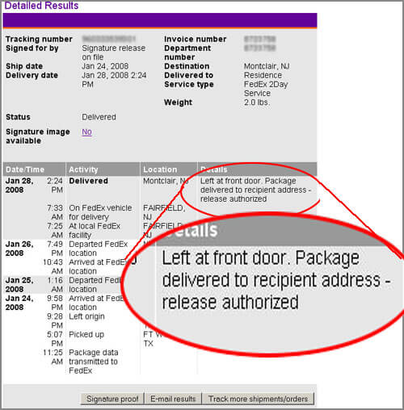

Ah, bliss. That’s what you feel when you hold a new Nokia N810 Internet Tablet in your hands.
And after the long build-up of anticipation, the waiting for stock
in the U.S. and for the go-ahead from Nokia (not to mention enduring an
unrealized warning about a potential additional 3-week delay before
shipping), yesterday afternoon I was able to check online and see that
Fedex had delivered my own N810 yesterday afternoon.
At 2:24 p.m. according to the uselessly precise information recorded
in the shipping log. By 7:30 I would be home from Manhattan and
experiencing that bliss myself.
But, as it happens, I’m not holding a new N810 in my hands now. Why?
Because, despite the statement in the shipping log, a Fedex truck did
not pull up in front of our house yesterday with the long-awaited
package.
Somewhere in my home town of Montclair, NJ, someone’s front door did receive an unanticipated Fedex delivery yesterday afternoon.
Just not my front door.

Bliss I was expecting, not the nightmare and torment of now-you-see-it-now-you-don’t.
I’m just shaking my head at the moment (literally and figuratively),
waiting for what comes next. Yes, I see: I get to play an extra round
in the waiting game.
Added Wednesday, Jan 30
We have the first clue in the case.
Fedex never got back to me (why did I instinctively type ‘of
course’?), so I called again today. Vanessa, who took the call, said
the trace they had done involved querying the driver, who affirmed that
he had delivered the package.
Duh. But where had he delivered it?
“To your house, 27 [Ourstreet], Montclair. A white house next to a blue house.”
Aha! We don’t live next to a blue house!
After promising to send a note to the Fairfield center and let the
driver know that we live in a white house between another white house
and a yellow one, Vanessa advised me that I’d hear back from them this
morning (I’m writing this at 2:30 p.m. and haven’t heard anything, but
that just about goes without saying).
As it happens, number 23 is a blue house, and so I visited number 21
(no one home and no package lying about the premises) and left a
message about the N810.
Perhaps the driver misread the 7 as a 1?
I hope to learn from our neighbors this evening if they took in a
package they hadn’t realized was misdelivered. With two really young
children, they might not have bothered to open an unexpected delivery
yet.
Well, at least I can hope.
Added Thursday, Jan 31
The saga continues:
Fedex delivery was definitely not made to number 21. The other
high-likelihood candidates nearby are all the immediate
here’s-your-misdirected-package sort. Thus the odds of a nearby
misdelivery (the package does have our name and address on it, after
all) are rapdily declining.
The street we live on is only one block long, so number confusion is
less common than street confusion. We get mail every couple weeks that
is meant for 27 Some-Other-Street (of course, that’s USPS, not Fedex).
If the N810 is going to show up in the next day or so, that’s now the
most likely explanation.
But I’m already bracing myself for the “OK, who’s going to accept
responsibility for replacing this device” discussion with the shipper
and deliverer.
Added Friday, Feb 1
After my third phone call with Fedex, I asked “Are you done? What do
I do?” And I got the answer that the shipper should put in for
reimbursement.
So yesterday morning, I called LetsTalk.com, explained the situation
to their rep, who said she would check with Fedex and then have a
supervisor call me back that morning. (Um, never called, of course. As
if I were expecting it.)
And so I called again today, went through exactly the same process,
even down to the “I have to get a supervisor to handle this” when I
interjected “You know, I’ve only called you because Fedex said they
were done with the trace and I should put in for reimbursement.”
That seemed to be just the right thing to say. The LetsTalk rep
called Fedex right then and there — conferencing me in — and the
apologetic Fedex rep who answered said they would be sending the driver
back to leave a note at the house where the delivery was made but that
LetsTalk should definitely ship another unit and put in for
reimbursement. (Unspoken was the alternate scenario: “And if we find
the package, we’ll ship it back and settle up again.”)
Right outcome. So now I’ve got a Monday or possibly Tuesday delivery.
I’ll wait to celebrate ’til I get the package.
Added Tuesday, Feb 5, 3 p.m.
Delivered five minutes ago. Hoorah!


{kind=link}